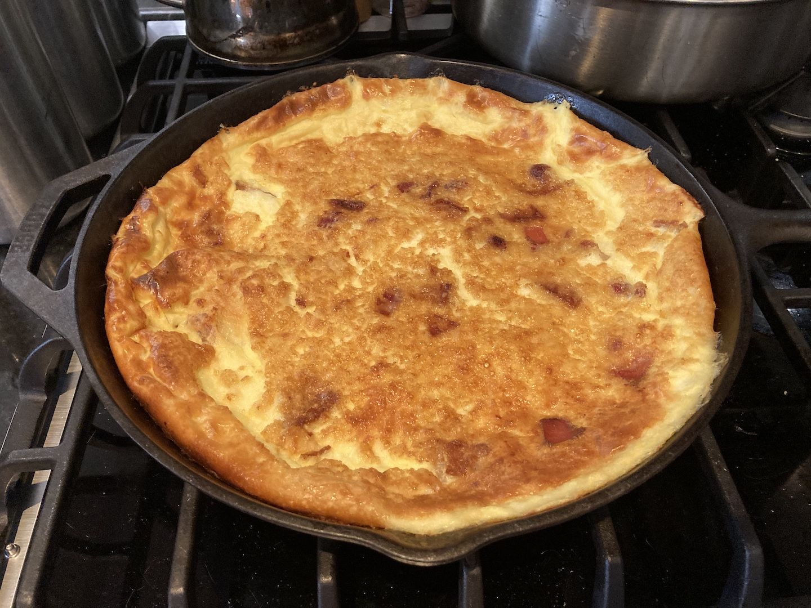

Kropsua - a delicious recipe!
This is a recipe that my family loves, Kropsua!
It's a great meal to have for breakfast on the weekends with blueberry or strawberry jam.
This recipe has 8 servings per meal.
The total time it should take is about 1½ hours so make sure you have the time to make it.

The ingredients you will need are as following:
- 200 grams of all purpose flour
- 30 grams of butter
- 350 grams of smoked bacon
- 5 eggs
- 5 cups of milk
- ½ tsp of salt
- Favorite jam
Now let's start making it!
- Preheat the oven to 220°C.
- Cook the bacon until it's chewy but not crispy, then slice it into squares roughly 1cm to a side.
- Crack the eggs into a large bowl then add the milk and salt to the bowl and whisk it till it's smooth.
- Pour the flour in and stir until it's all thoroughly mixed.
- Heat a pan (preferably cast iron) and melt the butter then spread it around until it covers the entire pan.
- Pour the liquid mixture of the bowl into the pan and then add the pieces of bacon on top evenly.
- Put the pan into the oven and bake for 45 mins or until the center turns a golden brown.
- Pull it out and wait for it to cool, this should take about 20 mins.
- Cut it into slices and eat warm with your favorite jam!
About this recipe
This is a meal that my family has almost every weekend and since it has so many serving, we have some for lunch through out the week.
It's a Finnish recipe tracing back all the way to my great grandmother who gave us this recipe.
I love to imagine how my father, my grand father, and my great grandmother where all making this recipe.